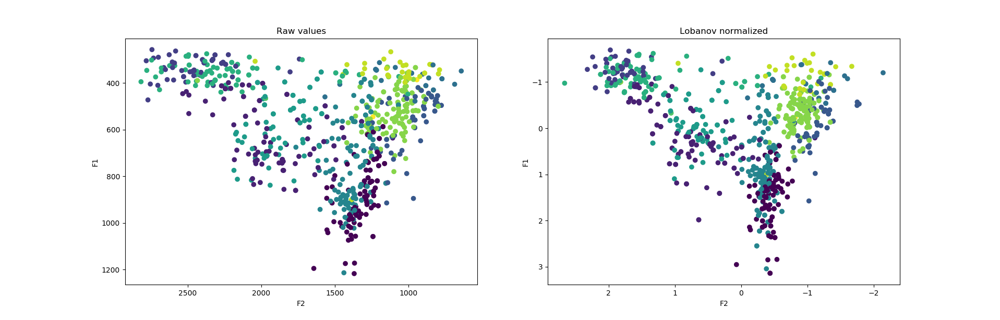

Normalizzazione Lobanov delle Vocali
Table of Contents
In questo post verrà spiegato come normalizzare un dataframe di valori delle formanti attraverso il metodo di Lobanov, che non è niente altro che un z-score applicato sulle formanti di un parlante.
Normalizzazione
Normalizzare le vocali è un processo necessario quando si confrontano più parlanti. Teoricamente se si analizzassero i dati fonetici di un singolo parlante non ci sarebbe bisogno di normalizzare i valori delle formanti. La maggior parte delle volte, però, queste analisi servono a scoprire quali cambiamenti stanno avvenendo in una lingua o quali le caratteristiche fonetiche e fonologiche di una lingua sono, e questo è difficile da fare con dati provenienti da un solo parlante.
Z-score
La normalizzazione Lobanov non è altro che uno Z-score applicato alle formanti di un parlante. La formula utilizzata quindi è:
Fn[V]N = (Fn[V] - MEANn )/Sn
E la sua spiegazione più dettagliata può essere trovata sulla pagina del NORM dell'università dell'Oregon.
E' uno dei metodi di normalizzazione più diffuso ed anche affidabile tra i metodi vowel-extrinsic.
Applicazione in Python
Dato un dataframe che ha un aspetto simile a quello riportato qui sotto, mettere insieme una semplice funzione che applica la formula dello z-score sulle formanti F1 ed F2 è il modo più semplice per avere i dati normalizzati.
| speaker | vowel | F1 | F2 |
|---|---|---|---|
| speaker1 | o | 948 | 1099 |
| speaker1 | e | 693 | 2004 |
| speaker2 | o | 956 | 1080 |
| speaker2 | a | 850 | 1348 |
| … | … | … | … |
Tenendo a mente la formula quindi, si creano due nuove serie (norm_F1 e norm_F2) contenenti i valori normalizzati.
Quindi, si sottrae al valore di ogni formante dello speaker la media dei valori di quella formante e si divide per la deviazione standard della formante dello speaker.
E' importante organizzare il dataframe con la funzione groupby() in modo da avere la formula applicata sul singolo speaker e non sull'intera popolazione di parlanti.
def lobanov(F1,F2, speaker): vowelsform['norm_F1'] = (vowelsform[F1] - vowelsform.groupby([speaker])[F1].transform(np.mean)) \ / vowelsform.groupby([speaker])[F1].transform(np.std) vowelsform['norm_F2'] = (vowelsform[F2] - vowelsform.groupby([speaker])[F2].transform(np.mean)) \ / vowelsform.groupby([speaker])[F2].transform(np.std)
Il risultato sarà una tabella con valori simili a questa:
| speaker | vowel | F1 | F2 | norm_F1 |
norm_F2 |
|---|---|---|---|---|---|
| speaker1 | o | 948 | 1099 | 0.577 | -0.961 |
| speaker1 | e | 693 | 2004 | -0.164 | 0.484 |
| speaker2 | o | 956 | 1080 | -0.27 | -1.103 |
| speaker2 | a | 850 | 1348 | 1.351 | -0.341 |
| … | … | … | … |
Rappresentando i valori in scatterplot possiamo vedere la differenza tra raw data e normalized:
